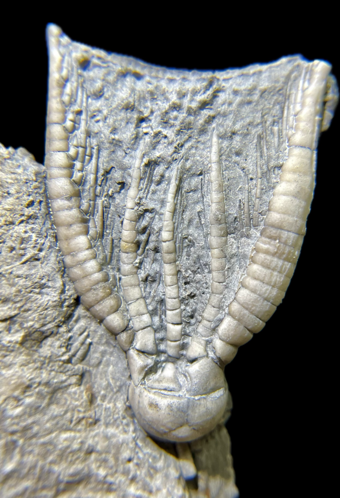

Pentaramicrinus bimagnaramus
• Mississippian
• Indian Springs Shale, Big Clifty Formation
• Crawford Co., Indiana, USA
Size: 3.3 cm crown
This is a bizarre species of crinoid with two incredibly enlarged arms (consistently the posterior arms of the A and E rays), with the remaining arms being relatively short and thin. Its species name no doubt refers to this trait and more-or-less means "two great arms/branches" ("bi"+"magna"+"ramus"). Burdick & Strimple 1971 recognized this unusually-consistent hypertrophy as likely some sort of functional adaptation, perhaps structural support for the rest of the arms. There is another likewise Mississippian-Chesterian crinoid genus called "Anartiocrinus" that exhibits the same pattern of two enlarged arms in the same positions. However these two genera are of different taxonomic families, so this may be a case of convergent evolution.
|

|